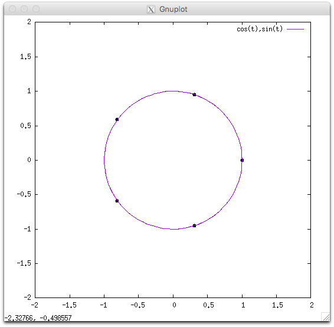
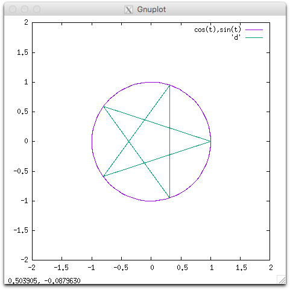
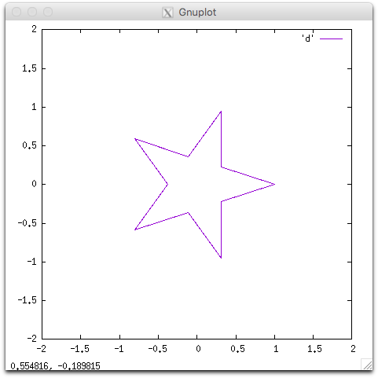
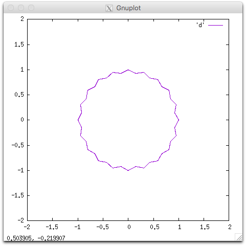

半径1の円に内接する正N/K角形の面積を求めてください。
ただし、正N/K角形を 「円周上に等間隔にN個の点を取り、 K-1個おきにそれぞれの点を結んだ一番外側の図形」 と定義することにします。
例えば、5/2角形は次のように描くことができます。 まず、半径1の円周上に等間隔に5つの点を取ります。

次に、それぞれの点を2-1=1つおきに結びます。

一番外側の図形が正5/2角形になります

入力は以下の形式で与えられる。
N K
2つの整数 N K が一行で与えられる。
入力は以下の制約を満たす。
半径1の円に内接する正N/K角形の面積を出力してください。 10-5以下の誤差が許容されます。
5 2
1.12256994
正5/2角形は上記の図形です。
20 3
2.93114293
正20/3角形は下のような図形です。

7 3
1.08395920
100000 3
3.14159265